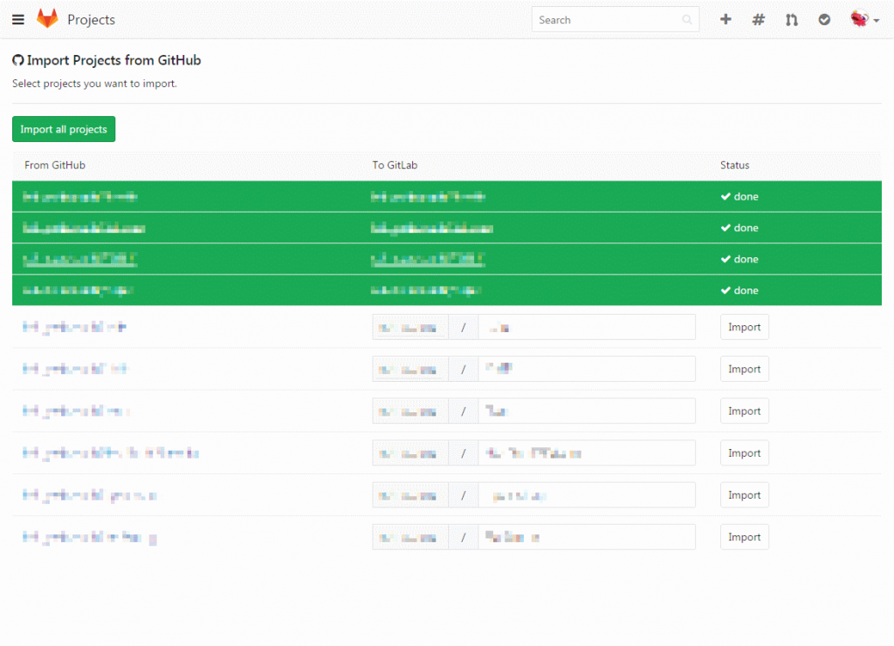

Introduction
開発メモ その61 Visual Studio Team Serviceを始める&Githubから引っ越しにて、**Visual Studio Team Service (以下VSTS)**のアカウントの作成を実施しました。
しかしながら、ものの一時間で使いにくい、という不満が高まってきました。
何が面倒って、
- 画面のUIが複雑
- Iterationの概念が複雑
の2点です。
特に、2つ目。仕事でも使っていましたが、やっぱりダメでした。
Issue作って、アサインしたりするワークフローを回すという作業が非常に面倒です。
個人のプロジェクトで利用するなら、ここまでの複雑なタスク管理は不要なんですよね。
GitLab
なので、Githubに似たサービスを利用することにしました。
- GitLab
- Bitbucket
- GitBucket
- Gitblit
- Gogs
が調べて存在するサービスです。
今回は知名度が高いGitLabを採用することにしました。
ただし、知名度の高さは2017年2月に引き起こしたデータ消失事件も少なからず影響しています。
GitLab suffers major backup failure after data deletion incident この件と下記のメリットを考慮して、GitLabの利用を決断しました。
- プライベートリポジトリを無制限に無料で利用できる
- Githubに似たLook and feel
- 最悪、GitLabからGithubに戻れる
Sign up
公式ページは、https://about.gitlab.com/です。
まず、右上のSign Upを選択します。
{kind=link}
- Full name
- 自分の名前を入力します。この名前はユーザ認証に使われません。
- Username
- ユーザ認証に利用するユーザ名
- Email
- GitLabからの連絡や問い合わせに使うメールアドレス。メールアドレスを使ってログインも可能です。
- Email confirmation
- 入力したメールアドレスの確認
- Password
- パスワード
入力が完了したら、CAPTCHAのチェックボックスにチェックを入れ、Registerボタンをクリックします。
確認メールが入力したメールアドレスに送信されますので、メールを確認して登録を終了させます。
登録の確認が完了するとメインページに遷移します。
これで登録が完了です。
{kind=link}
{kind=link}
{kind=link}
Import from Github
インポートも簡単でした。
まず、上部のバーの**+**ボタンをクリックします。
続いて、インポート元のプロジェクトを選択します。
今回はGitHubを選択。
List your GitHub repositoriesをクリックします。
GitHubへのログインを済ませ、GitLabとGitHubとの連携を許可します。
Authorize applicationをクリックします。
GitHub内のprivateを含むプロジェクトの一覧が表示されます。
インポートしたい必要なプロジェクトの右側にあるImportボタンをクリックします。
暫くすると、インポートが完了します。
 適当にプロジェクト名をクリックして、インポート結果を確認します。
ソースコードがインポートされていることが確認できます。
Visual Studio Team Serviceとは異なりIssueもインポートに成功しています。素晴らしい。
{kind=link}
{kind=link}
{kind=link}
{kind=link}
{kind=link}
{kind=link}
{kind=link}
{kind=link}
Conclusion
最近のWebサービスは本当に親切ですね。インポートも簡単でした。
これが本当に無料で利用できるなんて、信じられません。
サービス事業者は厳しい競争にさらされてると思いますが、頑張って欲しいです。